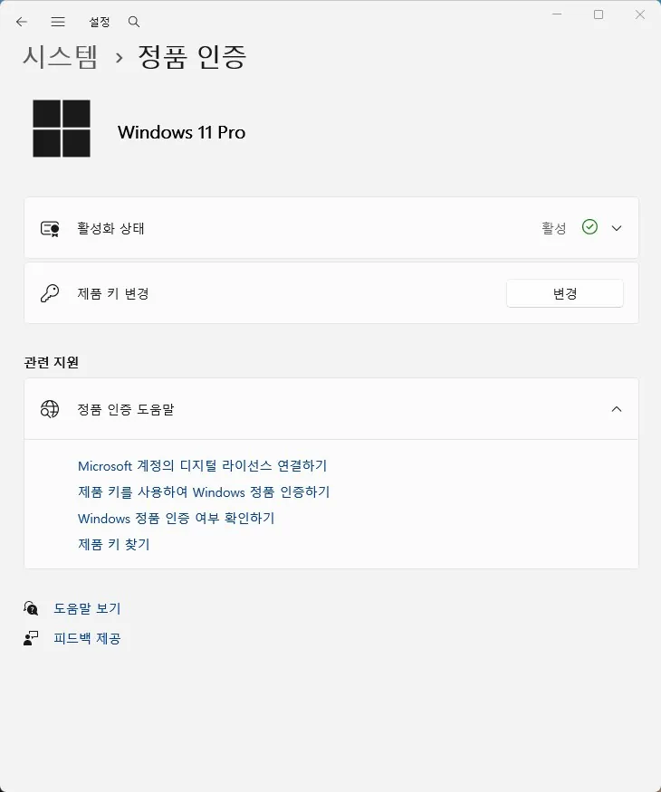

정품 인증
윈도우 정품 인증 오류의 원인과 점검 순서
윈도우가 정품 인증되지 않거나 인증 화면에서 오류가 반복되는 경우
정품 인증 오류는 크게 두 가지 상황으로 나뉩니다. 이전에 정상적으로 인증되어 있었는데 하드웨어를 교체한 뒤 인증이 풀린 경우와, 처음부터 제품 키나 라이선스 자체에 문제가 있는 경우입니다.
메인보드를 교체했다면 디지털 라이선스가 이전 하드웨어 정보에 묶여 있어서 자동으로 재인증되지 않는 경우가 가장 흔합니다. 이때는 제품 키를 새로 입력하는 것보다 Microsoft 계정 연결 여부를 먼저 확인하는 것이 빠릅니다.
이 페이지는 정확한 오류 코드를 먼저 확인한 뒤, 상황별로 점검 순서를 나눠서 설명합니다.
이 가이드가 필요한 상황
- 설정 > 정품 인증 화면에 오류 코드나 "해당 없음"이 표시된다.
- 최근 메인보드나 CPU를 교체한 적이 있다.
- 같은 제품 키로 다른 PC에서도 윈도우를 설치한 적이 있다.
먼저 확인할 항목
- 정확한 오류 코드 확인 — 오류 코드에 따라 원인이 완전히 다르기 때문에, "안 된다"는 상태보다 정확한 코드를 먼저 확인해야 합니다. 설정 > 시스템 > 정품 인증에서 표시되는 오류 코드와 문구를 그대로 기록하세요. 정상일 때는 아래처럼 활성화 상태가 초록색 체크와 함께 "활성"으로 표시되며, 문제가 있으면 이 자리에 오류 코드가 나타납니다.

- 정품 인증 문제 해결사 실행 — Microsoft가 제공하는 문제 해결사가 흔한 원인(하드웨어 변경, 라이선스 불일치)을 자동으로 진단해줍니다. 정품 인증 설정 화면에서 "문제 해결" 버튼을 눌러 안내에 따라 진행하세요.
- Microsoft 계정 연결 여부 확인 — 디지털 라이선스가 Microsoft 계정에 연결되어 있으면 하드웨어를 교체해도 문제 해결사를 통해 재인증이 가능합니다.
- 네트워크·DNS 연결 확인 — 인증 서버에 연결하지 못하면 정상적인 라이선스도 일시적으로 인증되지 않은 것처럼 표시될 수 있습니다. DNS 문제가 의심되면 공용 DNS(8.8.8.8 등)로 바꿔 재시도하세요.
원인을 더 정확히 나누는 방법
하드웨어 교체 후 인증이 풀렸을 때
메인보드 교체는 윈도우 입장에서 "다른 PC"로 인식되는 가장 큰 변경입니다. Microsoft 계정에 라이선스가 연결되어 있었다면 문제 해결사에서 "최근 이 장치의 하드웨어를 변경했습니다"를 선택해 재인증할 수 있습니다.
제품 키 자체에 문제가 있을 때
중고 PC나 저가로 구매한 키의 경우, 이미 다른 기기에서 사용 중이거나 볼륨 라이선스(기업용)여서 개인 재설치에 사용할 수 없는 경우가 있습니다. 이 경우 문제 해결사로는 해결되지 않습니다.
확인 결과에 따른 다음 단계
- 하드웨어 변경이 원인일 때 — Microsoft 계정 연결과 문제 해결사만으로 대부분 해결됩니다. 별도로 제품 키를 다시 구매할 필요는 없습니다.
- 문제 해결사로도 안 될 때 — 제품 키의 출처(정식 구매 여부)를 다시 확인해야 하며, 특히 저가로 구매한 키라면 유효성 자체를 의심해야 합니다.
피해야 할 실수
- 오류 코드를 확인하지 않고 무작정 제품 키를 재입력하는 것
- Microsoft 계정 연결 여부를 확인하지 않고 재설치부터 시도하는 것
- 출처가 불분명한 제품 키의 유효성을 의심하지 않는 것
자주 묻는 질문
- 메인보드만 바꿨는데 왜 인증이 풀리나요? 윈도우의 디지털 라이선스는 하드웨어 정보(특히 메인보드)를 기준으로 활성화 상태를 기억합니다. 메인보드가 바뀌면 다른 PC로 인식되어 재인증이 필요합니다.
- Microsoft 계정에 연결해두지 않았으면 어떻게 하나요? 이 경우 문제 해결사의 자동 재인증이 어려울 수 있어, 정품 제품 키를 가지고 있다면 직접 입력하거나 Microsoft 고객센터 문의가 필요할 수 있습니다.
함께 보면 좋은 페이지
최종 검토일: 2026-07-17